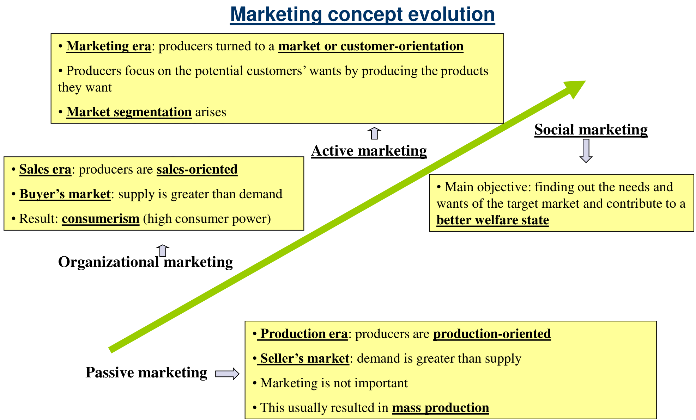
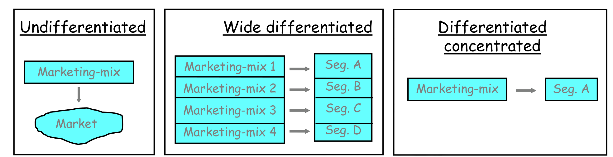
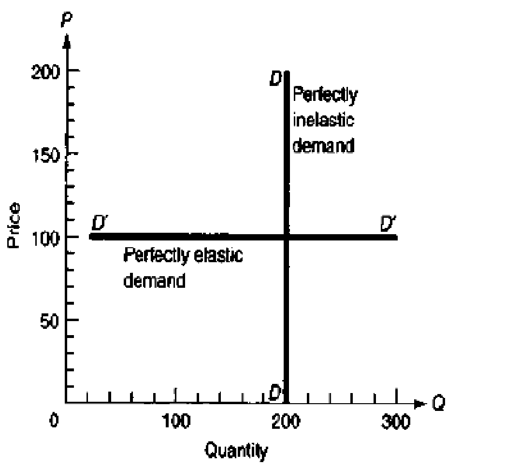
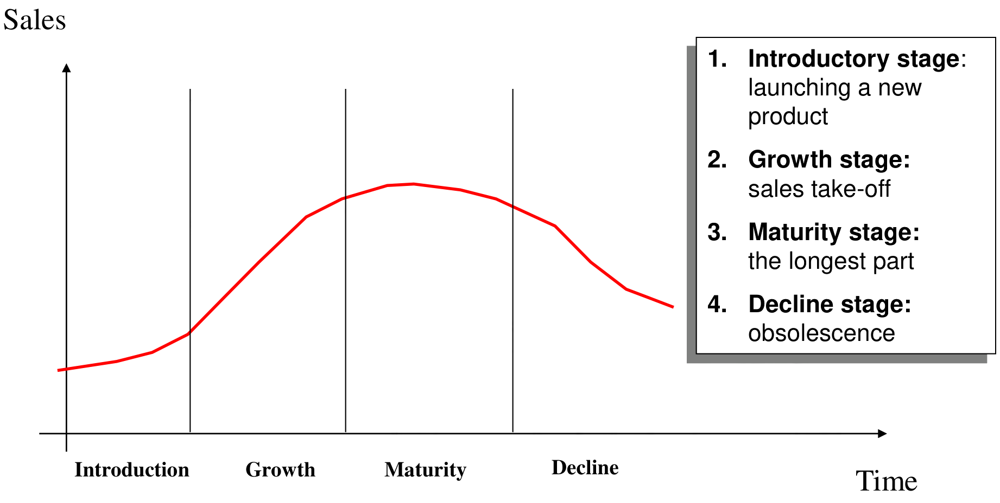
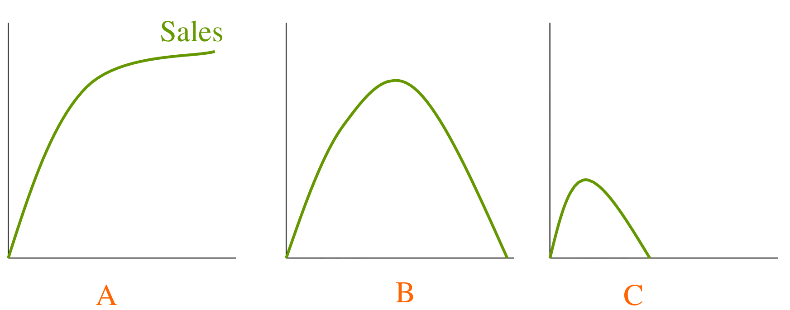
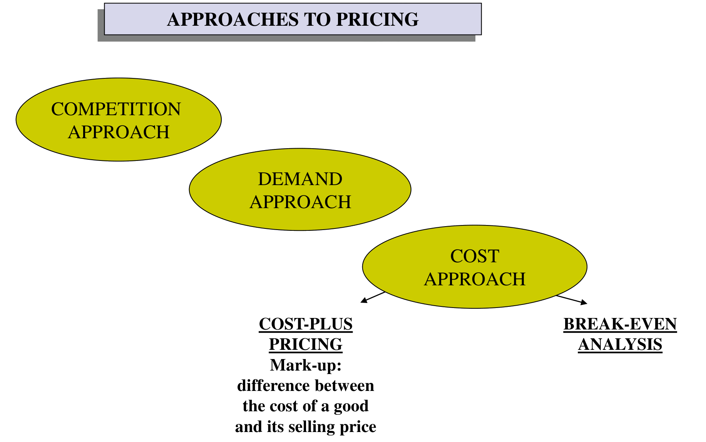

Marketing and Sales Management
The role of marketing, strategic and operative marketing, segmentation and positioning, demand analysis and the price elasticity of demand, and the marketing mix: product, price, promotion and distribution.
Central idea: marketing is the process of planning and executing the conception, pricing, promotion and distribution of ideas, goods and services to create exchanges that satisfy individual and organizational objectives. Strategic marketing analyses the market, segments it and positions the product; operative marketing builds the marketing mix of the 4 Ps (product, price, place and promotion). Demand analysis measures how the demand reacts to those variables through elasticities, above all the price elasticity $E_d = (\%\Delta Q_d)/(\%\Delta P)$: elastic demand ($|E_d| > 1$) makes revenue fall when the price rises, inelastic demand ($|E_d| < 1$) makes it rise.
The topic has three parts [Slide 2]: the role of marketing in the company, market segmentation and positioning of the product, and the marketing-mix decisions on product, price, place and promotion. The supplementary notes topic 5.2.2.pdf develop the price elasticity of demand.
Part I — The role of marketing in the company
§ 1 Exchange and marketing [Slide 3]
The concept of exchange is crucial in marketing: exchange is the process by which two or more persons give and receive something of value. Marketing is the process of planning and executing the conception, pricing, promotion and distribution of ideas, goods and services to create exchanges that satisfy individual and organizational objectives.
§ 2 Evolution of the marketing concept [Slides 4-5]
| Stage | Era | Features |
|---|---|---|
| Passive marketing | production era | producers are production-oriented; seller's market (demand greater than supply); marketing is not important; usually mass production |
| Organizational marketing | sales era | producers are sales-oriented; buyer's market (supply greater than demand); result: consumerism (high consumer power) |
| Active marketing | marketing era | producers turn to a market or customer orientation and produce what potential customers want; market segmentation arises |
| Social marketing | — | main objective: finding out the needs and wants of the target market and contributing to a better welfare state |

The sale is a one-way process: the company puts goods and services in front of the customer. Marketing is a two-way process: the goods and services go to the customer and information about what is desired comes back to the company [Slide 5].
§ 3 The marketing management process [Slides 6-8]
Marketing management has two systems [Slide 6]:
- Strategic marketing (the analysis system): analysing the potential demand, identifying the customers' needs, and setting the marketing objectives and strategies.
- Operative marketing (the action system): creating and maintaining a marketing mix that satisfies the target market, combining four variables, the 4 Ps: product, place, price and promotion.
Strategic marketing analyses the current situation of the company's products and the customers' needs and wants, selects and analyses a target market, and identifies the threats and opportunities that, combined with the resources and capabilities of the company, may create a competitive advantage [Slide 7]. Its phases:
- Analysis of the situation: market, competitors, environment and internal analysis.
- Diagnosis of the situation: SWOT analysis.
- Definition of the marketing objective.
- Formulation of the strategies: market segmentation and positioning of the product.
Operative marketing develops and coordinates product, place, promotion and price strategies so that the target market is satisfied and the firm makes a profit [Slide 8]. Its phases:
- Define the action plan for the marketing mix: identify the sales objectives, define the activities to achieve them (the 4 Ps) and establish the marketing budget.
- Execute the marketing-mix strategies.
- Control and assessment.
Part II — Market segmentation and positioning
§ 4 Market segmentation [Slides 9-12]
Market segmentation is the process of identifying smaller markets, the market segments, that exist within a larger market. It helps marketers tailor marketing mixes for the target segment, and it requires knowledge of potential customers' wants and behaviour, of changes in the market and of competitors [Slide 9].
Segmentation criteria [Slide 10]:
| Criterion | Examples |
|---|---|
| Geographical | national, international, regional; different areas (coast or not) |
| Demographic | age, sex, family size, level of income, type of job |
| Psychological and purchase behaviour | personality, lifestyle; frequency of purchase (regular, temporary); type of use of the product (low, medium, high) |
Segmentation identifies the market needs that are not being satisfied, gives a better adjustment of supply and demand, and identifies the competitors [Slide 11].
Three segmentation strategies [Slide 12]:
- Undifferentiated (mass) marketing: the company appeals to the whole market with a single product or service and marketing strategy; a single marketing mix is offered to the total market.
- Wide differentiated (multisegment) marketing: the firm targets two or more segments and develops distinct products or services with a separate marketing mix for each.
- Differentiated concentrated (niche) marketing: the product and the marketing message are aimed at a single, well-defined segment.

§ 5 Positioning [Slides 13-14]
Positioning is the technique by which marketers try to create an image or identity for a product, brand or company in the perception of the target market [Slide 13]. It has two phases: the marketing manager uses the marketing-mix strategy to position the product in the mind of the customer, and the customer creates a perception of the product, how buyers see it.
A successful positioning strategy is usually based on a sustainable competitive advantage of the company. Positioning can be based on product characteristics, benefits of the product, user characteristics, placing and comparing it relative to another product, or the price-quality relationship [Slide 14].
§ 6 Analysis and forecast of the demand [Slides 15-16]
Demand analysis measures and quantifies the real demand, identifies the variables that affect it and forecasts it [Slide 15]. One measure is the market share:
Techniques include pilot markets, the Delphi technique and purchasing intention surveys.
Demand is the volume of sales of a certain product for a specific group of customers, at a set time and place, given some environment conditions and a marketing programme. It is quantified along three dimensions (product, group of customers and time), and the real demand is distinguished from the potential market demand [Slide 16].
§ 7 Elasticity of the demand [Slide 17]
A main objective of demand analysis is to forecast and measure the variations of the demand due to changes in the factors related to it, mainly the marketing-mix variables. The elasticity of the demand with respect to a factor $F$ is
| Value | Demand |
|---|---|
| $E > 1$ | elastic: sensitive to changes of the factor |
| $E = 1$ | unit elastic |
| $E < 1$ | inelastic: not sensitive to changes of the factor |
§ 8 Price elasticity of demand (topic 5.2.2)
The price elasticity of demand $E_d$ measures how much the quantity demanded of a good changes when its price changes: the percentage change in quantity demanded divided by the percentage change in price (topic 5.2.2.pdf, p. 2). Written with differentials, for good $n$ with price $p_n$ and quantity demanded $q_n^d$:
By the law of demand the coefficient is negative (price and quantity move in opposite directions), and its absolute value is used. It depends mainly on the availability of substitute goods, since then the quantity demanded depends a lot on the price (p. 2).
Elasticity and income (p. 3). Revenue (income) is $I = P \cdot Q$.
| Demand | Price rise | Price fall |
|---|---|---|
| Elastic, $\lvert E_d \rvert > 1$: a 1% price change moves $Q_d$ by more than 1% | demand falls even more, income falls | demand rises even more, income rises |
| Inelastic, $\lvert E_d \rvert < 1$: a 1% price change moves $Q_d$ by less than 1% | nearly the same quantity at a higher price, income rises | nearly the same quantity at a lower price, income falls |
| Unit elastic, $\lvert E_d \rvert = 1$ | the percentage price rise is offset by an equal fall in volume, income does not change | income does not change |
Limiting cases (p. 4): perfectly inelastic demand, $E_d = 0$, does not respond to price changes (a vertical demand curve); perfectly elastic demand, $E_d = \infty$, changes indefinitely for a tiny price change (a horizontal demand curve).

Cross elasticity (p. 5) relates the demand for one good to the price of another:
It is positive for substitute goods and negative for complementary goods. If X and Y are complementary, a fall in the price of X increases the consumption of both; if they are substitutes, a fall in the price of X increases the consumption of X and decreases that of Y. The greater the substitutability or complementarity, the greater the reaction to any change in price.
Part III — Marketing-mix decisions
§ 9 Product [Slides 18-26]
The marketing mix has four elements: product, price, place and promotion [Slide 18].
The product is a bundle of tangible and intangible attributes that may satisfy customer wants and is received in exchange for payment. The basic (core or generic) product is less than the total product people buy: customers also buy benefits such as quality, design, packaging, size, quantity, post-sale services and image. Customer satisfaction depends on the physical-technical characteristics and on psychosocial factors; the psychosocial attributes are brand, design, packaging and quality [Slide 19].
Brand [Slide 20]: a name, term, design, symbol or any other feature that identifies one seller's good or service as distinct from those of other sellers. It contains a name (the part that can be said) and a logo (design, symbol, graph and distinct colours). Strategic options: manufacturer brands or dealer brands (owned by a wholesaler or retailer); a corporate (unique) brand, multi-brands, individual brands, a family (umbrella) brand, or secondary brands. Slide 21 illustrates individual branding (the products of one soft-drink company, each with its own name) against umbrella branding (one name over many businesses), and dealer brands.
Design and packaging [Slide 22]: design is the appropriate combination of physical appearance, colour, shape and ease of use, from an aesthetic (beauty) and a functional (ease of use) perspective. Packaging is the design and production of the container or wrapper of a product, including the label; it protects the content and eases transport, carries the compulsory label with information about the product, and can make the product more convenient and attractive.
Quality [Slide 23] measures whether the product satisfies the customers' needs; it depends on the intrinsic characteristics of the product and on what consumers expect of it. Other attributes are warranty, post-sale services, size, quantity and product line.
Product lines [Slide 24]: a range of products (assortment) is an offer of product lines and individual products, described by its extension (number of lines), depth (products per line), length (total number of individual products) and consistency (with the final use). Product strategies: add product lines (more range), extend the lines (more depth) or incorporate product variations (more length).
Product life-cycle [Slide 25]: it can apply to a product category, a product form or a brand, and has four stages: introduction (launching a new product), growth (sales take off), maturity (the longest part) and decline (obsolescence).

Slide 26 asks which of three sales curves is a fashion product, an immediate failure and a product of a dilated life. Reading the curves: A, whose sales grow and then stay, is the product of a dilated life; B, which rises and falls, is the fashion product; C, which falls almost at once, is the immediate failure.

§ 10 Price [Slides 27-28]
Price is the marketing-mix element that sets the amount of money the seller seeks from the buyer in exchange for the product. It matters because it influences the demand, reinforces the image of the product and must be compatible with the other marketing-mix strategies. Pricing objectives are aligned with the marketing objectives and with the other objectives of the company: maximizing profit, maximizing sales or achieving a certain market share [Slide 27].
There are three approaches to pricing [Slide 28]: the competition approach, the demand approach and the cost approach. The cost approach uses cost-plus pricing (the mark-up is the difference between the cost of a good and its selling price) or break-even analysis (Topic 4).

§ 11 Promotion [Slides 29-33]
Communication is the process of influencing others' behaviour by sharing ideas, information or feelings; marketers' efforts to communicate with target audiences are called promotion. Its objectives are to gain attention, to teach, to remind, to persuade and to reassure. The promotion mix has five activities: advertising, sales promotion, public relations, direct marketing and personal selling [Slide 29].
| Activity | Definition | Decisions |
|---|---|---|
| Advertising [Slide 30] | any paid form of non-personal communication through the mass media about a product by an identified sponsor (magazines, direct mail, internet, TV, billboards, newspapers); informative or persuasive | 1. target audience; 2. objectives; 3. message; 4. media; 5. budget; 6. timing; 7. evaluating effectiveness (sales- or communication-oriented) |
| Sales promotion [Slide 31] | any activity that offers an incentive for a limited period to induce a desired response from customers, salespeople or intermediaries; it adds value because the incentive does not ordinarily come with the product | 1. objectives; 2. type of promotion; 3. programme; 4. advertising the plan; 5. evaluating the results |
| Public relations [Slide 32] | communication to build and maintain a favourable image of the firm, keep the goodwill of its stakeholders and explain its goals (relations with the media, sponsorship) | — |
| Direct marketing [Slide 32] | an interactive system that uses one or more media (telephone, internet, TV, direct mail, social media) to obtain a specific, measurable response or transaction at any location | — |
| Personal selling [Slide 33] | a person-to-person process in which the seller learns the prospective buyer's wants and seeks to satisfy them with a sale | planning and coordinating the sales force (size, remuneration, objectives, quotas); managing it and evaluating its efficiency (recruiting, organizing, leadership and motivation) |
§ 12 Distribution (place) [Slides 34-37]
The objective of distribution is getting the product to customers where and when they want it. A distribution channel is the series of interdependent firms that facilitate the transfer of title to a product as it moves from producer to final buyer; an intermediary (wholesaler, retailer) operates between the producer and the final buyer. Distribution is physical (logistics) or through distribution channels [Slide 34].
Types of channel [Slide 35]: direct, where the producer sells directly to the final buyers, and indirect, where independent intermediaries take some tasks: merchandise agents and brokers (bring buyers and sellers together, without owning title, for a commission), wholesalers (sell to intermediaries or organizational buyers, not to final consumers) and retailers (sell consumer goods and services to final consumers).
Functions of intermediaries [Slide 36]: improve exchange efficiency, help match supply and demand, offer a wide product mix from different producers, manage logistics, and perform other marketing functions such as financing, market information and storage.
Selecting a channel [Slide 37]: 1. set the objectives of the distribution, considering buying habits, customer characteristics, product characteristics and the characteristics of the company and its competitors; 2. establish a distribution strategy: intensive, selective or exclusive distribution; 3. define the distribution channel, considering the characteristics of each intermediary and the coordination among them.
§ 13 Practical formulary
| Magnitude | Formula | Source |
|---|---|---|
| Market share | brand sales / total sales of the reference market | Slide 15 |
| Elasticity w.r.t. a factor | $(\Delta D/D)/(\Delta F/F)$ | Slide 17 |
| Price elasticity (point) | $E_d = (dq/dp)\,(p/q)$, used in absolute value | topic 5.2.2, p. 2 |
| Elastic / unit / inelastic | $\lvert E_d \rvert > 1$ / $= 1$ / $< 1$ | Slide 17; topic 5.2.2, p. 3 |
| Cross elasticity | $\%\Delta Q_X / \%\Delta P_Y$: $> 0$ substitutes, $< 0$ complements | topic 5.2.2, p. 5 |
The six exercises of the price elasticity sheet are solved in Problem Set - T5 Price Elasticity of Demand.